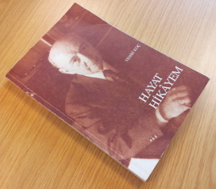

A couple of weeks ago, I heard one of our family relatives talking about the biography of Vehbi Koç, who started business in a small storefront and raised his legacy to a multi-billion dollar enterprise in Turkey. I had long wanted to read his auto-biography My Life Story: The Autobiography of a Turkish Businessman. But first, I wanted to learn about his life from an objective perspective. For that purpose, I started looking for a website to purchase the Özel Arşivinden Belgeler ve Anılarıyla Vehbi Koç [Vehbi Koç with Documents From His Private Archive and Memories] by Can Dündar, who is a well-known Turkish journalist, columnist and documentarian. Unfortunately, the book was out of order in every bookstore and website I visited. Then I wrote an e-mail to Can Dündar and asked him if does he have any extra copies of the book that he could share with me. He kindly mailed me the books without requesting any fees. Here I would like to express my gratitude to him for his courtesy.

Thanks to the long waiting hours in traffic while going to the work in İstanbul, I have managed reading the books in two weeks. (In the foreword, Can Dündar tells that this is a 3 books series and the last book is still under development.) Due to my previous experiences with other works of Can Dündar, it was no surprise that the work was well organized and composed of (mostly) private documents, writings, and mails stating the events and related developments in a cohesive and expressive manner. Besides the parts directly related with Vehbi Koç, the books shed significant light to the industrial, economical and political evolutions of Turkey at that time. Further, prior to reading the books, I did not know how Vehbi Koç was so influential on the development of Turkey in many aspects, some of which can be listed as introduction of new fundamental laws enabling the presence of holding and charity companies, first car industry, first local hotels in the line of Hilton, marvelous hospital, railway, industry constructions that are still standing up and are well respected in their fields today. In addition, the books mention about the struggles he had, the industrial and political obstacles that are put in front of him by other people, how he always managed to surmount by his honesty and hard working.
All in all, now I see Vehbi Koç as not just a business man, but a pioneer in the advancement of Turkey who contributed many artwork that are ground breaking and exposing new potentials in their fields, even now. While Koç Holding A.Ş. is still one of the top industrial conglomerates in the world, his achievements were ahead of his time and something that, in addition to his own children, even I am proud of.
Edit: Today, I had chance to finish reading My Life Story: The Autobiography of a Turkish Businessman as well. Majority of the content is in line with what was presented in Can Dündar’s books.

In the section, where Vehbi Koç mentions about his visit to Japan in 1970, I found a pointer to a journal article series (dating back to 24, 25, 26 March, 1970) that he shares his notes and comments about the visit. I found the articles quite important in terms of understanding the development history of Japan and its comparison with Turkey at that time. But more importantly, it gives hints about the way Vehbi Koç thinks while analyzing a whole new country with an extraordinary cultural, governmental, economical and industrial structure.
 |
 |
 |
I hope others interested in the subject would find them useful as well.